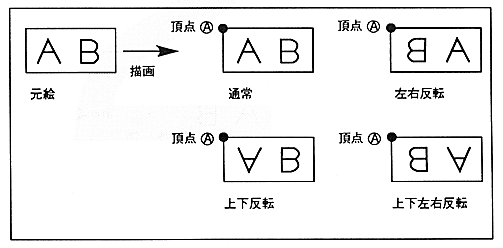

Draw at the position where the character pattern is specified. Specify the coordinates of the upper left vertex to draw the character pattern. From the specified upper left coordinate, X is drawn to the right and Y is drawn to the bottom. If the character pattern readout direction is set to flip vertically or horizontally, the right edge of the defined character pattern is drawn from the left or the bottom edge from the top.
¡Standard sprites cannot be rotated 90 °. If you want to rotate 90 degrees, use the sprite drawing command.
Figure 1.2 Standard Sprite
